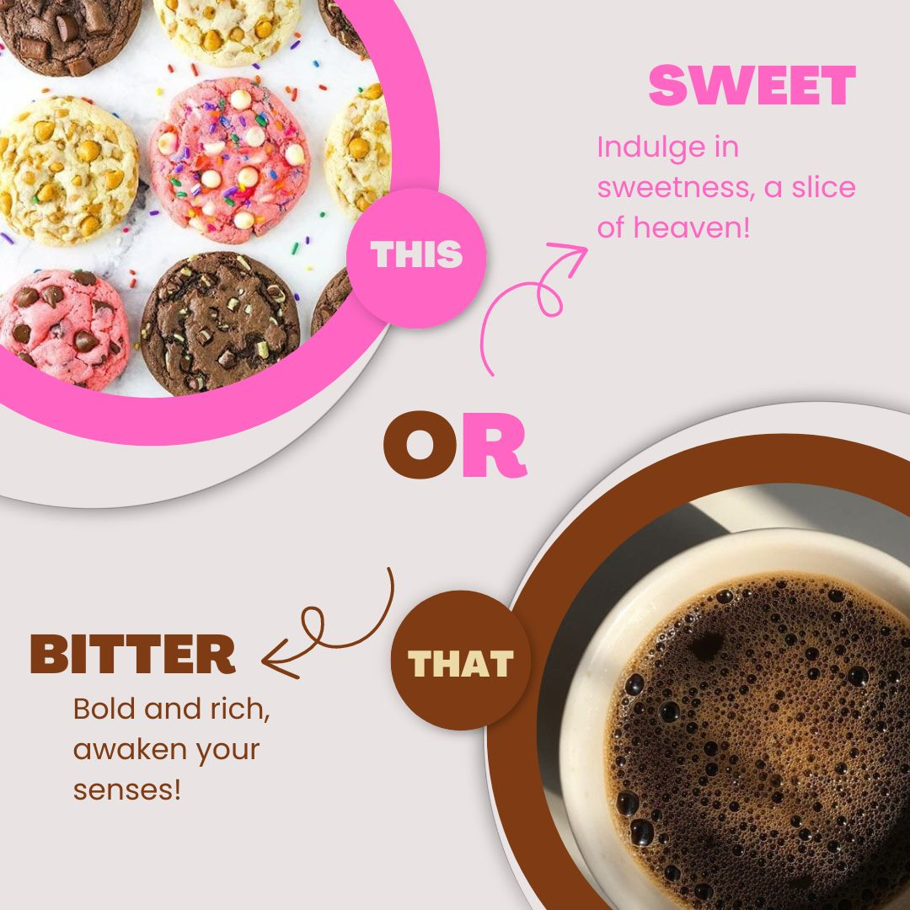

Sweet or Bittersweet
Sweet or Bittersweet didirikan pada tahun 2015 oleh seorang pecinta kuliner bernama Abheek Dev. Terinspirasi dari perjalanan hidupnya yang seringkali menggambarkan percampuran antara suka dan duka, ia memutuskan untuk membangun toko kue yang awalnya hanya menawarkan dua rasa yang kontras: manis dan pahit. Awalnya, Abheek membuka toko ini untuk memperkenalkan kembali cita rasa tradisional Indonesia, seperti jamu pahit dan kue-kue manis tradisional. Namun, seiring berjalannya waktu, ia juga mengadopsi menu modern seperti kopi espresso dan dessert ala barat yang tetap setia pada tema rasa manis dan pahit. Cafe ini tidak hanya menjadi tempat untuk menikmati hidangan, tetapi juga simbol perenungan tentang hidup, di mana dua rasa yang berbeda bisa bersatu dan menciptakan harmoni yang unik.
Selain menjadi simbol percampuran rasa yang kontras, Cafe Sweet Bittersweet juga memiliki makna filosofis yang lebih dalam, seperti slogan kami "Sweet or Bittersweet, Where Every Bite and Sip Tells a Story!" Dua rasa yang berbeda ini melambangkan keseimbangan hidup, di mana manis menggambarkan momen kebahagiaan, kesuksesan, dan momen indah, sementara pahit mempresentasikan tantangan, kegagalan, serta pengalaman yang mengajarkan kita untuk tumbuh. Dengan menghadirkan kedua konsep rasa ini, toko ini ingin menyampaikan bahwa hidup tidak hanya terdiri dari satu rasa; manis dan pahit saling melengkapi, menciptakan pengalaman yang utuh dan bermakna. Secara bisnis, pemilihan konsep ini juga memberikan fleksibilitas dalam diversifikasi produk dan target pasar, memungkinkan toko untuk menarik pelanggan yang memiliki preferensi rasa yang berbeda, baik mereka yang lebih suka kenikmatan manis maupun yang mencari kekuatan dan kedalaman rasa pahit yang membawa pesan bahwa setiap pengalaman dalam hidup memiliki nilainya sendiri dan layak untuk dinikmati.
Zona Sweet
Rasa manis selalu menjadi pilihan sempurna untuk memanjakan lidah dan menambah kehangatan suasana. Dengan tekstur yang lembut, rasa manis yang pas, dan aroma yang menggoda, setiap gigitan menghadirkan kebahagiaan tersendiri. Kami menawarkan kudapan tradisional hingga kudapan modern, kudapan manis selalu berhasil menciptakan momen spesial di setiap kesempatan. Apakah Anda menyantapnya sebagai teman minum teh atau sekadar pelepas dahaga akan gula? manisnya selalu meninggalkan kesan tak terlupakan.


 Berikut kami tampilkan beragam display makanan yang ada di Zona Manis, area yang penuh dengan kudapan yang memanjakan selera. Di sini, Anda akan menemukan berbagai hidangan penutup mulai dari menu tradisional seperti onde-onde, lupis dan bika ambon. Tidak ketinggalan, menu modern memanjakan mata seperti cupcakes hingga macaron juga tersedia.Setiap makanan di Zona Manis dirancang untuk menciptakan momen bahagia di setiap gigitan, memadukan rasa manis yang pas dengan tekstur yang nikmat. Apapun selera Anda, Zona Manis siap menghadirkan pengalaman kuliner membuat Anda kembali lagi untuk mencicipi lebih banyak pilihan lezat!!
Berikut kami tampilkan beragam display makanan yang ada di Zona Manis, area yang penuh dengan kudapan yang memanjakan selera. Di sini, Anda akan menemukan berbagai hidangan penutup mulai dari menu tradisional seperti onde-onde, lupis dan bika ambon. Tidak ketinggalan, menu modern memanjakan mata seperti cupcakes hingga macaron juga tersedia.Setiap makanan di Zona Manis dirancang untuk menciptakan momen bahagia di setiap gigitan, memadukan rasa manis yang pas dengan tekstur yang nikmat. Apapun selera Anda, Zona Manis siap menghadirkan pengalaman kuliner membuat Anda kembali lagi untuk mencicipi lebih banyak pilihan lezat!!
Berikut Daftar Menu Zona Sweet
| No. |
Kudapan Tradisional |
Idr |
Kudapan Modern |
Idr |
| 1. |
Kue Lupis |
Rp.4.000/pcs |
Cookies |
Rp.5.000/pcs |
| 2. |
Klepon |
Rp.4.000/pcs |
Churos |
Rp.4.000/pcs |
| 3. |
Kue Pancong |
Rp.5.000/pcs |
Cupcakes |
Rp.7.000/pcs |
| 4. |
Onde-onde |
Rp.4.000/pcs |
Macaron |
Rp.5.000/pcs |
| 5. |
Bika Ambon |
Rp.100.000/box |
Brownies |
Rp.85.000/box |
Zona Bittersweet
Minuman pahit, meskipun sering kali dihindari oleh sebagian orang, menyimpan keunikan dan cerita yang kaya di balik setiap tegukan. Dari kopi tubruk yang aromatik dan penuh karakter dari Jawa, hingga jamu pahit yang legendaris, minuman ini bukan sekadar penyegar, tetapi juga simbol tradisi yang menjunjung tinggi kesehatan. Wedang uwuh, dengan rempah-rempahnya yang hangat, menawarkan pengalaman sensori yang menggugah, sementara teh hitam dari Sumatra menyajikan rasa pahit yang mendalam dan menenangkan. Di Aceh, kopi sanger menjadi jembatan antara rasa pahit dan manis, menciptakan harmoni yang unik di lidah. Setiap minuman pahit ini membawa kita berkelana melintasi kekayaan budaya Nusantara, menunjukkan bahwa di balik rasa pahit terdapat kelezatan dan manfaat yang tak ternilai. Siapa sangka, pahitnya hidup ini bisa menjadi kenikmatan tersendiri?


 Berikut kami hadirkan beragam display minuman khas di Zona Pahit, tempat yang menawarkan keunikan rasa yang berani dan tak terlupakan. Di sini, Anda bisa menemukan kopi tubruk yang pekat dengan aroma khasnya, jamu sambiloto pahit yang menyehatkan, serta wedang secang yang menghangatkan. Tak hanya minuman nusantara saja, kami juga menyajikan minuman seperti expresso, cold brew serta matcha latte. Zona Pahit adalah tempat bagi Anda yang ingin mengeksplorasi cita rasa berbeda, di mana setiap tegukan dan gigitan membawa keunikan tersendiri yang kaya akan tradisi. Nikmati sensasi pahit yang memberikan pengalaman kuliner luar biasa!
Berikut kami hadirkan beragam display minuman khas di Zona Pahit, tempat yang menawarkan keunikan rasa yang berani dan tak terlupakan. Di sini, Anda bisa menemukan kopi tubruk yang pekat dengan aroma khasnya, jamu sambiloto pahit yang menyehatkan, serta wedang secang yang menghangatkan. Tak hanya minuman nusantara saja, kami juga menyajikan minuman seperti expresso, cold brew serta matcha latte. Zona Pahit adalah tempat bagi Anda yang ingin mengeksplorasi cita rasa berbeda, di mana setiap tegukan dan gigitan membawa keunikan tersendiri yang kaya akan tradisi. Nikmati sensasi pahit yang memberikan pengalaman kuliner luar biasa!
Berikut Daftar Menu Zona Bittersweet
| No. |
Minuman Nusantara |
Idr |
Minuman Lainnya |
Idr |
| 1. |
Wedang Secang |
Rp.15.000 |
Cold Brew |
Rp.20.000 |
| 2. |
Jamu Sambiloto |
Rp.15.000 |
Expresso |
Rp.25.000 |
| 3. |
Kopi Sanger Aceh |
Rp.20.000 |
Matcha Latte |
Rp.20.000 |

 Jangan lupa mampir ke Sweet or Bittersweet, tempat yang nyaman dan penuh dengan cita rasa unik. Dengan suasana yang tenang dan menyegarkan, Anda bisa menikmati berbagai kudapan manis yang menggoda selera hingga berbagai minuman pahit khas Nusantara yang diracik dengan sempurna. Tempat ini dirancang untuk memberikan pengalaman yang berbeda, di mana setiap sudut menghadirkan kesan hangat dan ramah. Pastikan Anda tidak melewatkan kesempatan untuk merasakan kedua sensasi rasa yang khas sambil bersantai di lingkungan yang sejuk. Ayo, kunjungi kami dan nikmati momen manis pahit di tempat yang hangat dan menenangkan!
Jangan lupa mampir ke Sweet or Bittersweet, tempat yang nyaman dan penuh dengan cita rasa unik. Dengan suasana yang tenang dan menyegarkan, Anda bisa menikmati berbagai kudapan manis yang menggoda selera hingga berbagai minuman pahit khas Nusantara yang diracik dengan sempurna. Tempat ini dirancang untuk memberikan pengalaman yang berbeda, di mana setiap sudut menghadirkan kesan hangat dan ramah. Pastikan Anda tidak melewatkan kesempatan untuk merasakan kedua sensasi rasa yang khas sambil bersantai di lingkungan yang sejuk. Ayo, kunjungi kami dan nikmati momen manis pahit di tempat yang hangat dan menenangkan!
Kunjungi kami di:
Jalan Flamboyan 25
Bintaro Sektor 5, Jakarta Selatan.
| Design by: |
| Nama |
Azzahra Ayu Ardhaweswari |
| NIM |
11220251000107 |
| Email |
ardhaweswari@gmail.com |
Manis atau Pahit, Setiap Gigitan dan Tegukan Menanti Anda!!